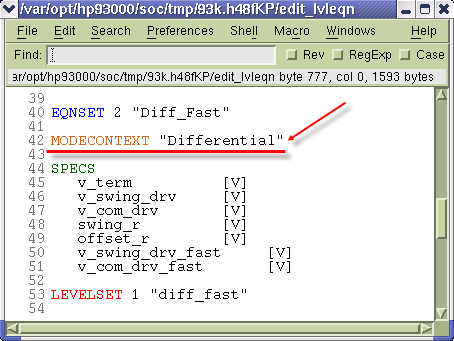
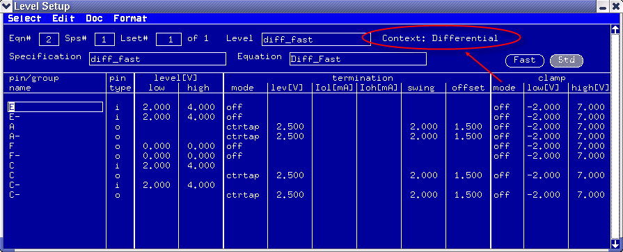
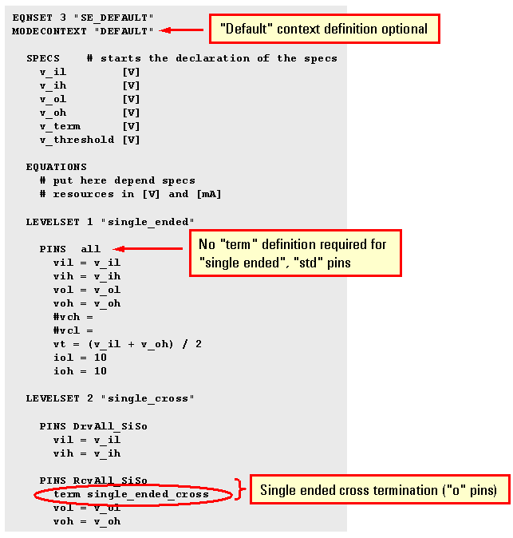
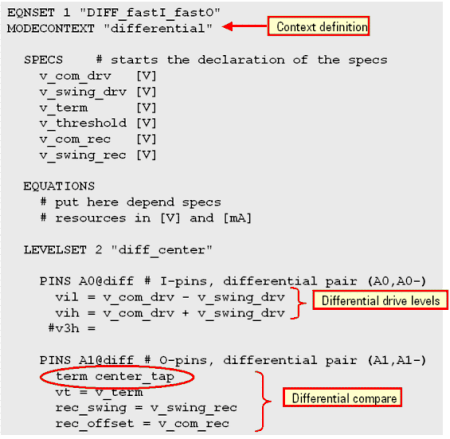

Specifying the context for levels
Every level equation set is associated with a context which is assigned in the pin configuration. If you do not explicitly specify a context, the context "DEFAULT" is automatically set.
Before you begin
Make sure that you have opened the Level Setup window.
Procedure
- In the Level Setup window, click the menu .
- The Level Equation editor opens. In the level equations, set the context:
MODECONTEXT "context name"

- To download the values in the level equations to the test system hardware, in the Level Equation editor, press F8.
- To verify the specified context, in the Level Setup window, click the menu .
Results
The context is displayed in the Level Setup window shown in the following figure.

Examples
Context "DEFAULT"
The level equation set shown in the figure below defines the levels for the context DEFAULT. Because it is a conventional level setup for std pins, it is not, in fact, necessary to define any context as the DEFAULT context will be automatically assumed when no context is defined.
This level equation set represents a DEFAULT context, and it defines the levels for all std mode pins without any FAST mode pins in a single-ended configuration.

Context "differential"
The name differential is an arbitrary context name given here to describe a differential setup but any other name except DEFAULT could also be used.
The level setup for this example includes differential pins in FAST mode and a termination chosen to be center_tap to set up a differential configuration.

Functional changes
- Introduced before SmarTest 6.3.2